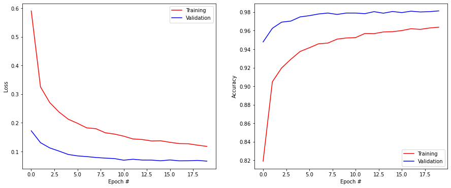

import numpy as np
import matplotlib.pyplot as pltKeras tutorial
The goal of this tutorial is to very quickly present keras, the high-level API of tensorflow, as it has already been seen in the Neurocomputing exercises. We will train a small fully-connected network on MNIST and observe what happens when the inputs or outputs are correlated, by training successively on the 0 digits, then the 1, etc.
Keras
The first step is to install tensorflow. The easiest way is to use pip:
pip install tensorflowkeras is now available as a submodule of tensorflow (you can also install it as a separate package):
import tensorflow as tfKeras provides a lot of ready-made layer types, activation functions, optimizers and so on. Do not hesitate to read its documentation on https://keras.io.
import tensorflow as tfThe most important object in keras is Sequential. It is a container where you sequentially add layers of neurons (fully-connected, convolutional, recurrent, etc) and other stuff. It represents your model, i.e. the neural network itself.
model = tf.keras.models.Sequential()You can then add() layers to the model. A fully-connected layer is called Dense in keras.
Let’s create a MLP with 10 input neurons, two hidden layers with 100 hidden neurons each and 3 output neurons.
The input layer is represented by the Input layer:
model.add(tf.keras.layers.Input((10,)))The first hidden layer can be added to the model with:
model.add(tf.keras.layers.Dense(100, activation="relu"))The layer has 100 neurons and uses the ReLU activation function. One could optionally define the activation function as an additional “layer”, but it is usually not needed:
model.add(tf.keras.layers.Dense(100))
model.add(tf.keras.layers.Activation('relu'))Adding more layers is straightforward:
model.add(tf.keras.layers.Dense(100, activation="relu"))Finally, we can add the output layer. The activation function depends on the problem:
- For regression problems, a linear activation function should be used when the targets can take any value (e.g. Q-values):
model.add(tf.keras.layers.Dense(3, activation="linear"))If the targets are bounded between 0 and 1, a logistic/sigmoid function can be used:
model.add(tf.keras.layers.Dense(3, activation="sigmoid"))- For multi-class classification problems, a softmax activation function should be used:
model.add(tf.keras.layers.Dense(3, activation="softmax"))This defines fully the structure of your desired neural network.
Q: Implement a neural network for classification with 10 input neurons, two hidden layers with 100 neurons each (using ReLU) and 3 output neurons.
Hint: print(model.summary()) gives you a summary of the architecture of your model. Note in particular the number of trainable parameters (weights and biases).
model = tf.keras.models.Sequential()
model.add(tf.keras.layers.Input((10,)))
model.add(tf.keras.layers.Dense(100, activation="relu"))
model.add(tf.keras.layers.Dense(100, activation='relu'))
model.add(tf.keras.layers.Dense(3, activation='softmax'))
print(model.summary())Model: "sequential"
_________________________________________________________________
Layer (type) Output Shape Param #
=================================================================
dense (Dense) (None, 100) 1100
_________________________________________________________________
dense_1 (Dense) (None, 100) 10100
_________________________________________________________________
dense_2 (Dense) (None, 3) 303
=================================================================
Total params: 11,503
Trainable params: 11,503
Non-trainable params: 0
_________________________________________________________________
NoneThe next step is to choose an optimizer for the neural network, i.e. a variant of gradient descent that will be used to iteratively modify the parameters.
keras provides an extensive list of optimizers: https://keras.io/optimizers/. The most useful in practice are:
SGD, the vanilla stochastic gradient descent.
optimizer = tf.keras.optimizers.SGD(learning_rate=0.001, momentum=0.9, nesterov=True)RMSprop, using second moments:
optimizer = tf.keras.optimizers.RMSprop(learning_rate=0.001)Adam:
optimizer = tf.keras.optimizers.Adam(learning_rate=0.001)Choosing a optimizer is a matter of taste and trial-and-error. In deep RL, a good choice is Adam: the default values for its other parameters are usually good, it converges well, so your only job is to find the right learning rate.
Finally, the model must be compiled by defining:
A loss function. For multi-class classification, it should be
'categorical_crossentropy'. For regression, it can be'mse'. See the list of built-in loss functions here: https://keras.io/losses/ but know that you can also simply define your own.The chosen optimizer.
The metrics, i.e. what you want tensorflow to print during training. By default it only prints the current value of the loss function. For classification tasks, it usually makes more sense to also print the
accuracy.
model.compile(
loss='categorical_crossentropy',
optimizer=optimizer,
metrics=['accuracy']
)Q: Compile the model for classification, using the Adam optimizer and a learning rate of 0.01.
optimizer = tf.keras.optimizers.Adam(learning_rate=0.01)
model.compile(
loss='categorical_crossentropy',
optimizer=optimizer,
metrics=['accuracy']
)Let’s now train the model on some dummy data. To show the power of deep neural networks, we will try to learn noise by heart.
The following cell creates an input tensor X with 1000 random vectors of 10 elements, with values sampled between -1 and 1. The targets (desired outputs) t are class indices (0, 1 or 2), also randomly selected.
However, neural networks expect one-hot encoded vectors for the target, i.e. (1, 0, 0), (0, 1, 0), (0, 0, 1) instead of 0, 1, 2. The method tf.keras.utils.to_categorical allows you to do that.
X = np.random.uniform(-1.0, 1.0, (1000, 10))
t = np.random.randint(0, 3, (1000, ))
T = tf.keras.utils.to_categorical(t, 3)Let’s learn it. The Sequential model has a method called fit() where you simply pass the training data (X, T) and some other parameters, such as:
- the batch size,
- the total number of epochs,
- the proportion of training examples to keep in order to compute the validation loss/accuracy (optional but recommmended).
# Training
history = tf.keras.callbacks.History()
model.fit(
X, T,
batch_size=100,
epochs=50,
validation_split=0.1,
callbacks=[history]
)Q: Train the model on the data, using a batch size of 100 for 50 epochs. Explain why you obtained this result.
history = model.fit(
X, T,
batch_size=100,
epochs=50,
validation_split=0.1,
verbose=2
)Epoch 1/50
9/9 - 0s - loss: 1.1248 - accuracy: 0.3267 - val_loss: 1.1045 - val_accuracy: 0.3700
Epoch 2/50
9/9 - 0s - loss: 1.0847 - accuracy: 0.3956 - val_loss: 1.1058 - val_accuracy: 0.3500
Epoch 3/50
9/9 - 0s - loss: 1.0672 - accuracy: 0.4211 - val_loss: 1.1099 - val_accuracy: 0.4300
Epoch 4/50
9/9 - 0s - loss: 1.0471 - accuracy: 0.4500 - val_loss: 1.1324 - val_accuracy: 0.3700
Epoch 5/50
9/9 - 0s - loss: 1.0238 - accuracy: 0.4778 - val_loss: 1.1600 - val_accuracy: 0.3500
Epoch 6/50
9/9 - 0s - loss: 0.9954 - accuracy: 0.4933 - val_loss: 1.1748 - val_accuracy: 0.3000
Epoch 7/50
9/9 - 0s - loss: 0.9602 - accuracy: 0.5456 - val_loss: 1.2112 - val_accuracy: 0.3200
Epoch 8/50
9/9 - 0s - loss: 0.9268 - accuracy: 0.5578 - val_loss: 1.2281 - val_accuracy: 0.3200
Epoch 9/50
9/9 - 0s - loss: 0.8850 - accuracy: 0.5811 - val_loss: 1.3152 - val_accuracy: 0.3300
Epoch 10/50
9/9 - 0s - loss: 0.8589 - accuracy: 0.6067 - val_loss: 1.3365 - val_accuracy: 0.3200
Epoch 11/50
9/9 - 0s - loss: 0.8106 - accuracy: 0.6422 - val_loss: 1.3766 - val_accuracy: 0.2800
Epoch 12/50
9/9 - 0s - loss: 0.7556 - accuracy: 0.6744 - val_loss: 1.4404 - val_accuracy: 0.3300
Epoch 13/50
9/9 - 0s - loss: 0.7030 - accuracy: 0.7033 - val_loss: 1.4946 - val_accuracy: 0.3200
Epoch 14/50
9/9 - 0s - loss: 0.6611 - accuracy: 0.7278 - val_loss: 1.5825 - val_accuracy: 0.2700
Epoch 15/50
9/9 - 0s - loss: 0.6036 - accuracy: 0.7578 - val_loss: 1.5963 - val_accuracy: 0.3100
Epoch 16/50
9/9 - 0s - loss: 0.5378 - accuracy: 0.8033 - val_loss: 1.7330 - val_accuracy: 0.2900
Epoch 17/50
9/9 - 0s - loss: 0.5032 - accuracy: 0.8089 - val_loss: 1.8647 - val_accuracy: 0.3300
Epoch 18/50
9/9 - 0s - loss: 0.4677 - accuracy: 0.8256 - val_loss: 1.8221 - val_accuracy: 0.2900
Epoch 19/50
9/9 - 0s - loss: 0.4277 - accuracy: 0.8378 - val_loss: 2.0721 - val_accuracy: 0.2800
Epoch 20/50
9/9 - 0s - loss: 0.3658 - accuracy: 0.8878 - val_loss: 1.9940 - val_accuracy: 0.3000
Epoch 21/50
9/9 - 0s - loss: 0.3388 - accuracy: 0.8978 - val_loss: 1.9864 - val_accuracy: 0.2800
Epoch 22/50
9/9 - 0s - loss: 0.2718 - accuracy: 0.9344 - val_loss: 2.3513 - val_accuracy: 0.2700
Epoch 23/50
9/9 - 0s - loss: 0.2419 - accuracy: 0.9522 - val_loss: 2.2233 - val_accuracy: 0.3000
Epoch 24/50
9/9 - 0s - loss: 0.2141 - accuracy: 0.9511 - val_loss: 2.4652 - val_accuracy: 0.3200
Epoch 25/50
9/9 - 0s - loss: 0.1990 - accuracy: 0.9611 - val_loss: 2.4545 - val_accuracy: 0.3100
Epoch 26/50
9/9 - 0s - loss: 0.1652 - accuracy: 0.9733 - val_loss: 2.5535 - val_accuracy: 0.3200
Epoch 27/50
9/9 - 0s - loss: 0.1517 - accuracy: 0.9711 - val_loss: 2.7361 - val_accuracy: 0.3300
Epoch 28/50
9/9 - 0s - loss: 0.1462 - accuracy: 0.9722 - val_loss: 2.8098 - val_accuracy: 0.3300
Epoch 29/50
9/9 - 0s - loss: 0.1313 - accuracy: 0.9811 - val_loss: 2.9959 - val_accuracy: 0.3000
Epoch 30/50
9/9 - 0s - loss: 0.1291 - accuracy: 0.9778 - val_loss: 3.0673 - val_accuracy: 0.2900
Epoch 31/50
9/9 - 0s - loss: 0.1031 - accuracy: 0.9833 - val_loss: 3.1009 - val_accuracy: 0.3400
Epoch 32/50
9/9 - 0s - loss: 0.1038 - accuracy: 0.9789 - val_loss: 3.0347 - val_accuracy: 0.2800
Epoch 33/50
9/9 - 0s - loss: 0.0932 - accuracy: 0.9856 - val_loss: 3.1245 - val_accuracy: 0.3000
Epoch 34/50
9/9 - 0s - loss: 0.0837 - accuracy: 0.9867 - val_loss: 3.1909 - val_accuracy: 0.3100
Epoch 35/50
9/9 - 0s - loss: 0.0973 - accuracy: 0.9767 - val_loss: 3.3376 - val_accuracy: 0.3000
Epoch 36/50
9/9 - 0s - loss: 0.0927 - accuracy: 0.9800 - val_loss: 3.4815 - val_accuracy: 0.3000
Epoch 37/50
9/9 - 0s - loss: 0.0806 - accuracy: 0.9878 - val_loss: 3.4252 - val_accuracy: 0.2800
Epoch 38/50
9/9 - 0s - loss: 0.0642 - accuracy: 0.9911 - val_loss: 3.4091 - val_accuracy: 0.3200
Epoch 39/50
9/9 - 0s - loss: 0.0529 - accuracy: 0.9922 - val_loss: 3.4793 - val_accuracy: 0.3200
Epoch 40/50
9/9 - 0s - loss: 0.0425 - accuracy: 0.9978 - val_loss: 3.5650 - val_accuracy: 0.3500
Epoch 41/50
9/9 - 0s - loss: 0.0287 - accuracy: 1.0000 - val_loss: 3.6355 - val_accuracy: 0.3100
Epoch 42/50
9/9 - 0s - loss: 0.0237 - accuracy: 1.0000 - val_loss: 3.6962 - val_accuracy: 0.2900
Epoch 43/50
9/9 - 0s - loss: 0.0178 - accuracy: 1.0000 - val_loss: 3.7916 - val_accuracy: 0.3200
Epoch 44/50
9/9 - 0s - loss: 0.0153 - accuracy: 1.0000 - val_loss: 3.7966 - val_accuracy: 0.3000
Epoch 45/50
9/9 - 0s - loss: 0.0129 - accuracy: 1.0000 - val_loss: 3.8263 - val_accuracy: 0.3100
Epoch 46/50
9/9 - 0s - loss: 0.0117 - accuracy: 1.0000 - val_loss: 3.8541 - val_accuracy: 0.3100
Epoch 47/50
9/9 - 0s - loss: 0.0107 - accuracy: 1.0000 - val_loss: 3.8768 - val_accuracy: 0.3100
Epoch 48/50
9/9 - 0s - loss: 0.0098 - accuracy: 1.0000 - val_loss: 3.9317 - val_accuracy: 0.3000
Epoch 49/50
9/9 - 0s - loss: 0.0093 - accuracy: 1.0000 - val_loss: 3.9322 - val_accuracy: 0.3000
Epoch 50/50
9/9 - 0s - loss: 0.0086 - accuracy: 1.0000 - val_loss: 3.9628 - val_accuracy: 0.3000A: The final training is 100%, the validation accuracy is 33% (may vary depending on initialization). The network has learned the training examples by heart, although they are totally random, but totally fails to generalize.
The main is reason is that we have only 1000 training examples, with a total number of free parameters (VC dimension) around 11500. By definition, the model can learn this training set perfectly, although it is totally random. Its VC dimension is however way to high to generalize anything. It is even worse here: as the data is random, there is nothing to generalize. A nice example to understand why NN overfit…
Training a MLP on MNIST
Let’s now try to learn something a bit more serious, the MNIST dataset. The following cell load the MNIST data (training set 60000 28x28 monochrome images, test set of 10000 images), normalizes it (values betwen 0 and 1 for each pixel), removes the mean image from the training set and transforms the targets to one-hot encoded vectors for the 10 classes. See the neurocomputing exercise for more details.
# Load the MNIST dataset
(X_train, t_train), (X_test, t_test) = tf.keras.datasets.mnist.load_data()
print("Training data:", X_train.shape, t_train.shape)
print("Test data:", X_test.shape, t_test.shape)
# Reshape the images to vectors and normalize
X_train = X_train.reshape(X_train.shape[0], 784).astype('float32') / 255.
X_test = X_test.reshape(X_test.shape[0], 784).astype('float32') / 255.
# Mean removal
X_mean = np.mean(X_train, axis=0)
X_train -= X_mean
X_test -= X_mean
# One-hot encoded outputs
T_train = tf.keras.utils.to_categorical(t_train, 10)
T_test = tf.keras.utils.to_categorical(t_test, 10)Training data: (60000, 28, 28) (60000,)
Test data: (10000, 28, 28) (10000,)Q: Create a fully connected neural network with 784 input neurons (one per pixel), 10 softmax output neurons and whatever you want in the middle, so that it can reach around 98% validation accuracy after 20 epochs.
- Put the network creation (including
compile()) in a methodcreate_model(), so that you can create a model multiple times. - Choose a good value for the learning rate.
- Do not exagerate with the number of layers and neurons. Two or there hidden layers with 100 to 300 neurons are more than enough.
- You will quickly observe that the network overfits: the training accuracy is higher than the validation accuracy. The training accuracy actually goes to 100% if your network is too big. In that case, feel free to add a dropout layer after each fully-connected layer:
model.add(tf.keras.layers.Dropout(0.5))def create_model():
# Create the model
model = tf.keras.models.Sequential()
# Input layer with 784 pixels
model.add(tf.keras.layers.Input((784,)))
# Hidden layer with 150 neurons
model.add(tf.keras.layers.Dense(150, activation="relu"))
model.add(tf.keras.layers.Dropout(0.5))
# Second hidden layer with 100 neurons
model.add(tf.keras.layers.Dense(100, activation="relu"))
model.add(tf.keras.layers.Dropout(0.5))
# Softmax output layer with 10 neurons
model.add(tf.keras.layers.Dense(10, activation="softmax"))
# Learning rule
optimizer = tf.keras.optimizers.Adam(lr=0.001)
# Loss function
model.compile(
loss='categorical_crossentropy', # loss
optimizer=optimizer, # learning rule
metrics=['accuracy'] # show accuracy
)
print(model.summary())
return modelmodel = create_model()
# Training
history = tf.keras.callbacks.History()
model.fit(
X_train, T_train,
batch_size=100,
epochs=20,
validation_split=0.1,
callbacks=[history]
)Model: "sequential_1"
_________________________________________________________________
Layer (type) Output Shape Param #
=================================================================
dense_3 (Dense) (None, 150) 117750
_________________________________________________________________
dropout (Dropout) (None, 150) 0
_________________________________________________________________
dense_4 (Dense) (None, 100) 15100
_________________________________________________________________
dropout_1 (Dropout) (None, 100) 0
_________________________________________________________________
dense_5 (Dense) (None, 10) 1010
=================================================================
Total params: 133,860
Trainable params: 133,860
Non-trainable params: 0
_________________________________________________________________
None
Epoch 1/20
540/540 [==============================] - 3s 5ms/step - loss: 0.5906 - accuracy: 0.8192 - val_loss: 0.1724 - val_accuracy: 0.9478
Epoch 2/20
540/540 [==============================] - 2s 4ms/step - loss: 0.3256 - accuracy: 0.9048 - val_loss: 0.1309 - val_accuracy: 0.9625
Epoch 3/20
540/540 [==============================] - 2s 4ms/step - loss: 0.2708 - accuracy: 0.9197 - val_loss: 0.1126 - val_accuracy: 0.9692
Epoch 4/20
540/540 [==============================] - 2s 5ms/step - loss: 0.2379 - accuracy: 0.9291 - val_loss: 0.1016 - val_accuracy: 0.9703
Epoch 5/20
540/540 [==============================] - 2s 5ms/step - loss: 0.2128 - accuracy: 0.9375 - val_loss: 0.0898 - val_accuracy: 0.9748
Epoch 6/20
540/540 [==============================] - 3s 5ms/step - loss: 0.1985 - accuracy: 0.9416 - val_loss: 0.0848 - val_accuracy: 0.9762
Epoch 7/20
540/540 [==============================] - 3s 5ms/step - loss: 0.1826 - accuracy: 0.9458 - val_loss: 0.0823 - val_accuracy: 0.9780
Epoch 8/20
540/540 [==============================] - 3s 6ms/step - loss: 0.1797 - accuracy: 0.9466 - val_loss: 0.0792 - val_accuracy: 0.9790
Epoch 9/20
540/540 [==============================] - 3s 5ms/step - loss: 0.1655 - accuracy: 0.9508 - val_loss: 0.0770 - val_accuracy: 0.9775
Epoch 10/20
540/540 [==============================] - 3s 5ms/step - loss: 0.1609 - accuracy: 0.9521 - val_loss: 0.0754 - val_accuracy: 0.9790
Epoch 11/20
540/540 [==============================] - 3s 6ms/step - loss: 0.1536 - accuracy: 0.9525 - val_loss: 0.0698 - val_accuracy: 0.9790
Epoch 12/20
540/540 [==============================] - 3s 5ms/step - loss: 0.1439 - accuracy: 0.9569 - val_loss: 0.0730 - val_accuracy: 0.9783
Epoch 13/20
540/540 [==============================] - 3s 6ms/step - loss: 0.1419 - accuracy: 0.9568 - val_loss: 0.0703 - val_accuracy: 0.9805
Epoch 14/20
540/540 [==============================] - 3s 5ms/step - loss: 0.1369 - accuracy: 0.9586 - val_loss: 0.0701 - val_accuracy: 0.9788
Epoch 15/20
540/540 [==============================] - 4s 7ms/step - loss: 0.1375 - accuracy: 0.9589 - val_loss: 0.0677 - val_accuracy: 0.9807
Epoch 16/20
540/540 [==============================] - 3s 6ms/step - loss: 0.1322 - accuracy: 0.9601 - val_loss: 0.0706 - val_accuracy: 0.9795
Epoch 17/20
540/540 [==============================] - 3s 6ms/step - loss: 0.1277 - accuracy: 0.9621 - val_loss: 0.0675 - val_accuracy: 0.9810
Epoch 18/20
540/540 [==============================] - 3s 6ms/step - loss: 0.1271 - accuracy: 0.9614 - val_loss: 0.0677 - val_accuracy: 0.9802
Epoch 19/20
540/540 [==============================] - 3s 6ms/step - loss: 0.1221 - accuracy: 0.9629 - val_loss: 0.0689 - val_accuracy: 0.9805
Epoch 20/20
540/540 [==============================] - 4s 7ms/step - loss: 0.1180 - accuracy: 0.9637 - val_loss: 0.0665 - val_accuracy: 0.9813<tensorflow.python.keras.callbacks.History at 0x7f3c50063670>After training, one should evaluate the model on the test set. keras provides an evaluate() method that computes the different metrics (in our case the loss) on the data:
score = model.evaluate(X_test, T_test)Another solution would be to predict() labels on the test set and manually compare them to the ground truth:
Y = model.predict(X_test)
loss = - np.mean(T_test * np.log(Y))
predicted_classes = np.argmax(Y, axis=1)
accuracy = 1.0 - np.sum(predicted_classes != t_test)/t_test.shape[0]Another important thing to visualize after training is how the training and validation loss (or accuracy) evolved during training. The fit() method updates a History object which contains the history of your metrics (loss and accuracy) after each epoch of training. These are simple numpy arrays, accessible with:
history.history['loss']
history.history['val_loss']
history.history['accuracy']
history.history['val_accuracy']Q: Compute the test loss and accuracy of your model. Plot the history of the training and validation loss/accuracy.
# Testing
score = model.evaluate(X_test, T_test)
print('Test loss:', score[0])
print('Test accuracy:', score[1])
plt.figure(figsize=(15, 6))
plt.subplot(121)
plt.plot(history.history['loss'], '-r', label="Training")
plt.plot(history.history['val_loss'], '-b', label="Validation")
plt.xlabel('Epoch #')
plt.ylabel('Loss')
plt.legend()
plt.subplot(122)
plt.plot(history.history['accuracy'], '-r', label="Training")
plt.plot(history.history['val_accuracy'], '-b', label="Validation")
plt.xlabel('Epoch #')
plt.ylabel('Accuracy')
plt.legend()
plt.show()313/313 [==============================] - 3s 10ms/step - loss: 0.0762 - accuracy: 0.9776
Test loss: 0.0761534720659256
Test accuracy: 0.9775999784469604